Quantitative Methods in Geographic Research
Welcome and Introduction
Outline
- Introductions
- Course Motivation and Overview
- Syllabus and Logistics
Introductions
Name/Preferred Name (if different)
Major & Year
I (don’t) know what you did last summer!
A place you visited?A dish you ate?A hobby you picked up?
You have $1 million and one-way ticket. Where would you want to settle for the next 5 years?
About Me
- ‘Sophomore’ Assistant Professor
Health and Medical Geographer
``` Lots of GIS + (Spatial) Statistics ```- First name pronounced as ‘Maroon’ with a ‘V’
- Last name pronounced as ‘Go-yell’
- You can call me Varun, Dr. Goel, Dr. G, Professor V
My research
Global Environmental Health (Asia, Africa)
Climate Change and HealthHuman-Environment Interactions
Infectious Disease Ecology
Malaria, Diarrhea, HIV, others
Evaluation of Health interventions
Applied Statistics
What is this course about?
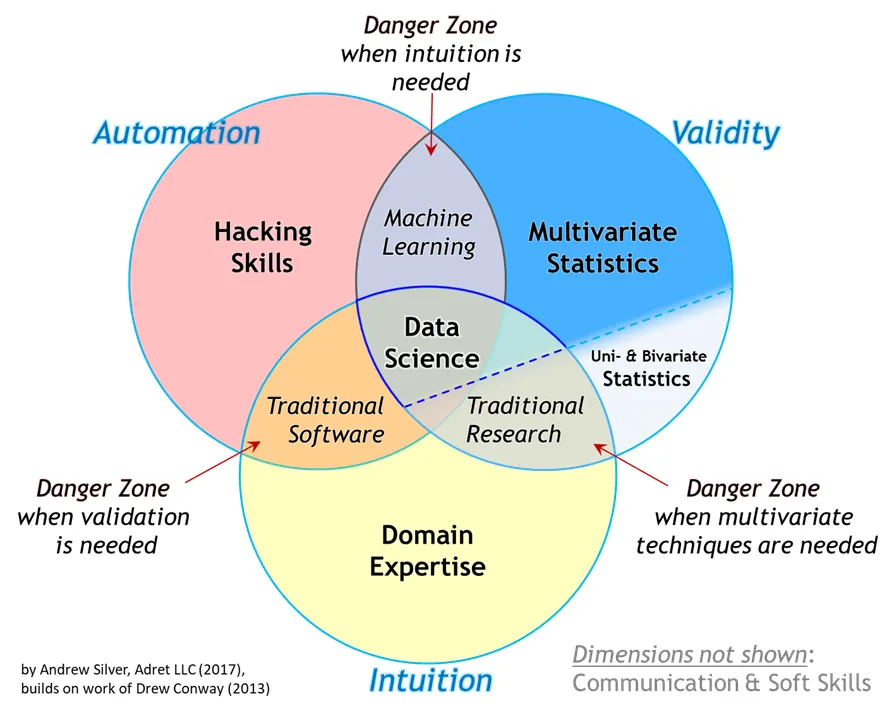
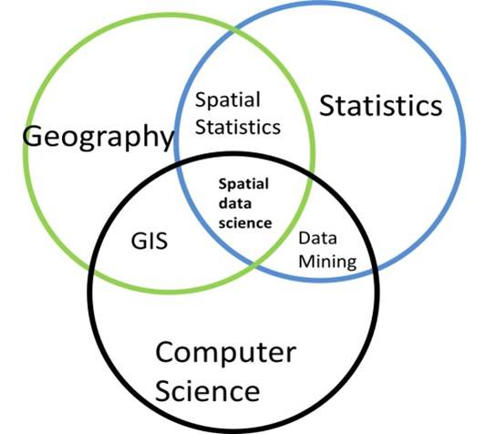
Quantitative Methods in Geography
- Statistics
- Research methods/design
- GIS
- Spatial Analysis
- Programming
- Science Communication
Statistics
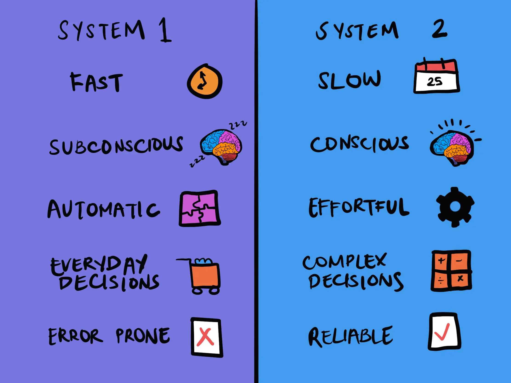
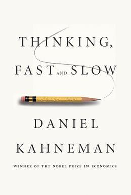
Research Design
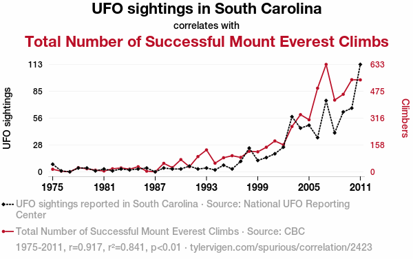
Better and Reliable Science Communication
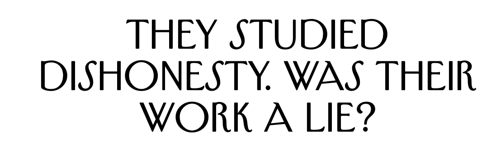
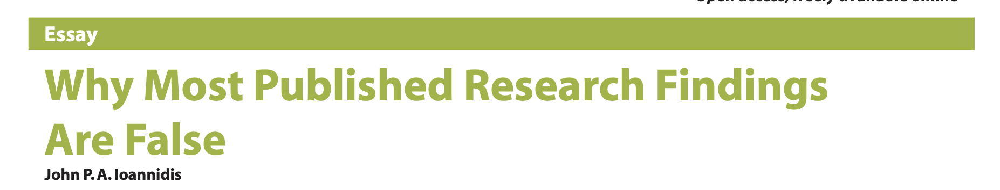
Example: Jo(h)n Snow and Cholera
Example: Jo(h)n Snow and Cholera
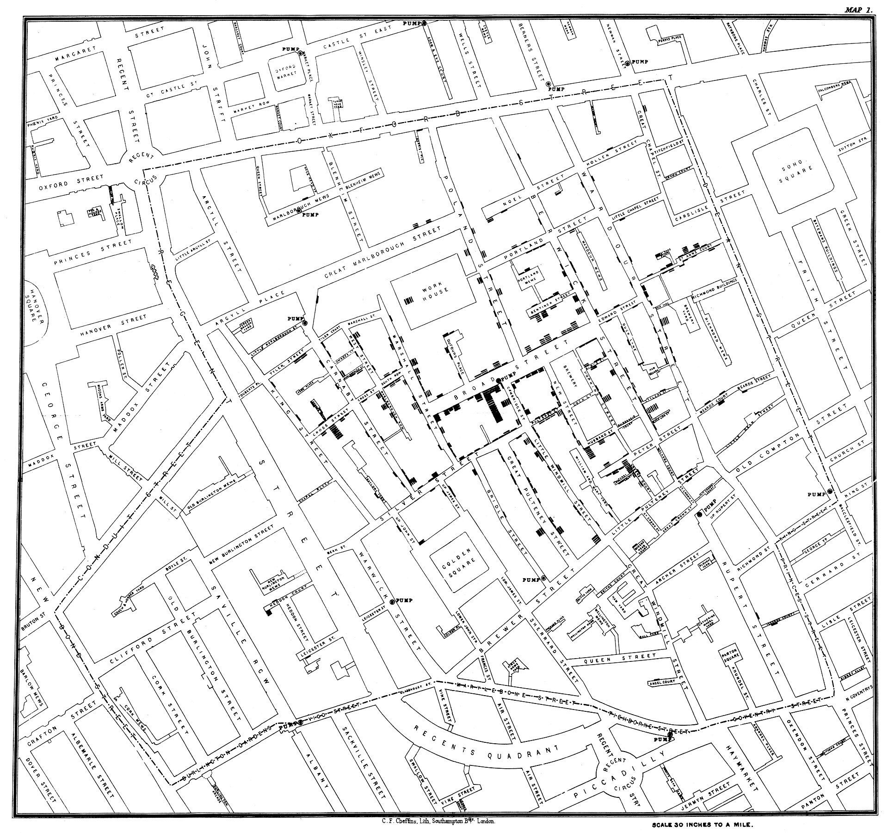
Example: Jo(h)n Snow and Cholera
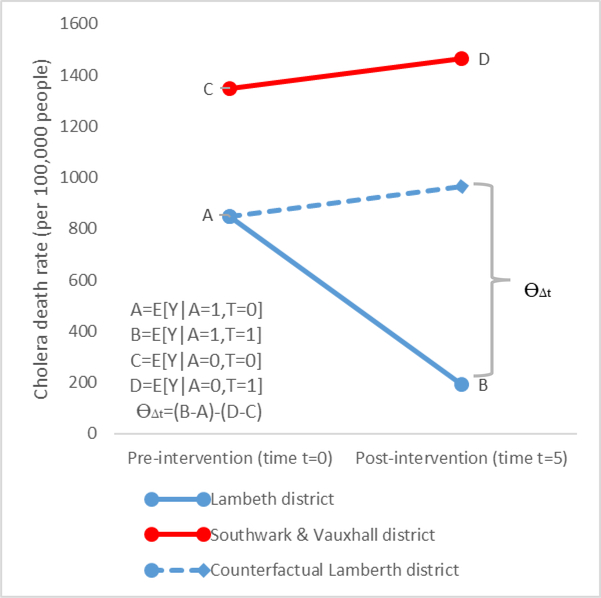
Example: Jo(h)n Snow and Cholera
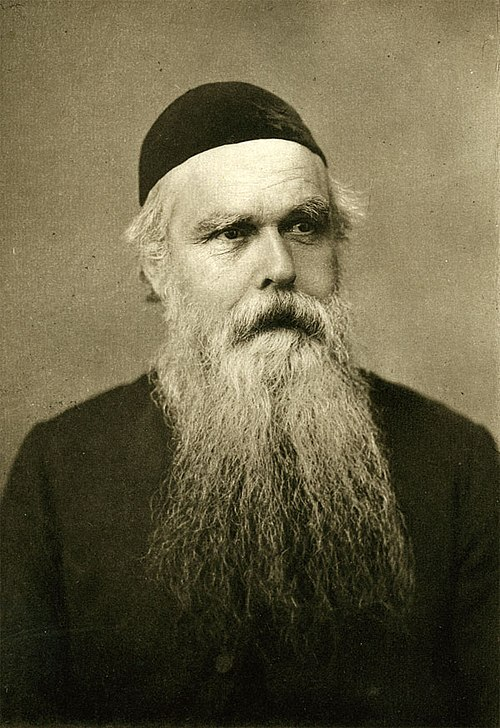
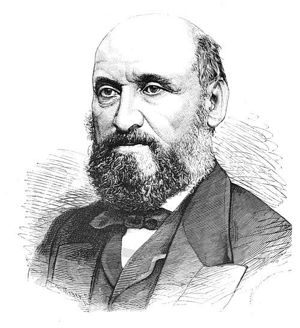
Example: Jo(h)n Snow and Cholera

A simple yet powerful descriptive spatial statistic
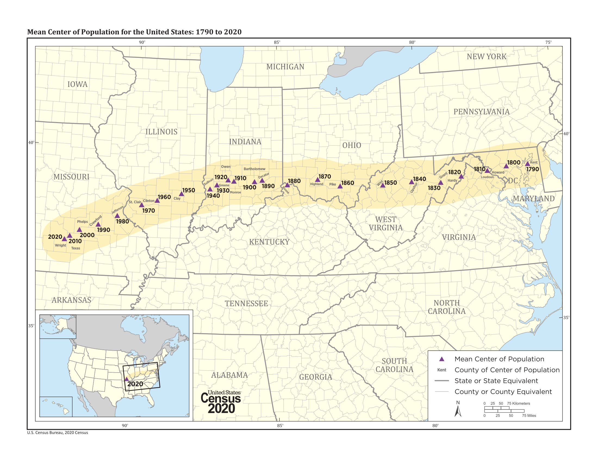
Logistics
- Syllabus
- Attendance and Participation. Discussion + Practice > Lecture
- Use of Generative AI.
- Hosting materials. Blackboard v/s Course website
- Asking for Help. Be Proactive
What is your experience level with R?
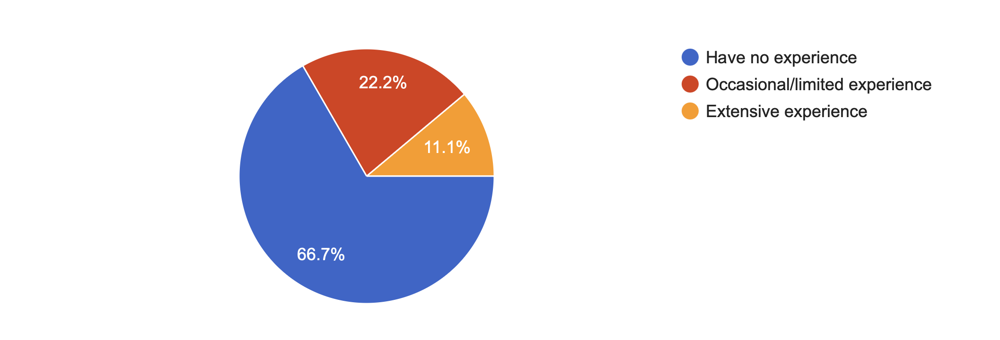
R
Programming Language written by Statisticians primarily for statistical computing
Big community and support
Suitable for Geographic Research
Very strong spatial statistics capabilitiesGreat data visualization + mappingSupported by packages (similar to libraries in Python)
R Studio, Posit Cloud
R Studio: Integrated Development Environment for R
Makes Dull R more Fun
Posit Cloud: Rstudio in the cloud
Reduces steep learning curveReduces technical issues
Sign up at https://posit.cloud/ with your SCHOOL email